Tree Hierarchy View
The Tree Hierarchy View lets you navigate the monitored infrastructure as a structured hierarchy, expanding levels progressively from a root entity down to individual metrics and services.
Accessing the view
The Tree Hierarchy View is available for Objects, Groups, and Customers.
- For Objects: clicking the link icon on a table row opens the Tree Hierarchy View directly.
- For Groups and Customers: open the Connections view, then use the toggle switch in the top bar to switch to the Tree Hierarchy View.
From the Tree Hierarchy View, use the Connections View button in the top bar to switch back.
Page layout
The page is divided into two panels:
- Left panel — read-only details of the selected root entity, with action buttons such as EDIT INFORMATIONS and DOWNTIMES
- Right panel — the expandable hierarchy of related entities
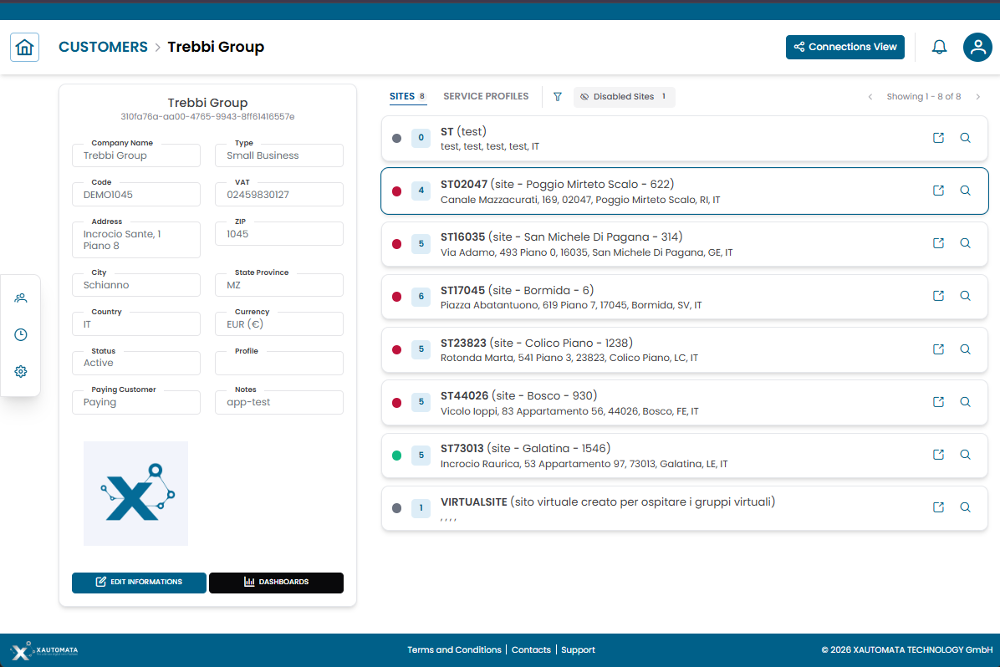
Fig.1 — Tree Hierarchy View — entity details on the left, expandable hierarchy on the right
Hierarchy structure
The right panel displays the infrastructure as expandable sections. Click any row to expand it and reveal the next level.
A typical navigation path from a Customer looks like:
- Customer
- Sites
- Groups
- Objects
- Metric Types
- Metrics / Services
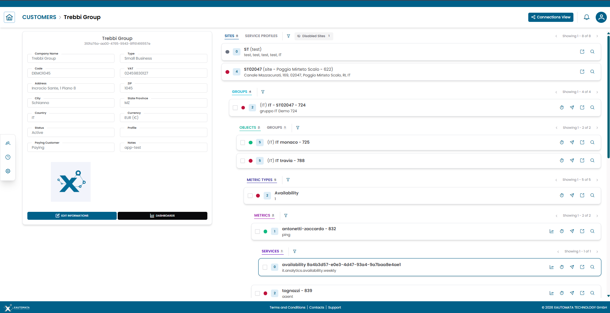
Fig.2 — Progressive expansion of hierarchy levels from Customer to Metrics
Note
The available levels depend on the entity type and its configuration. Not all paths lead to the same depth.
Hierarchy tabs
Some entities offer multiple hierarchical perspectives accessible via tabs at the top of the right panel.
For example, a Customer can expose:
- Sites — the geographic and logical grouping of objects
- Service Profiles — the service-oriented view of the same infrastructure
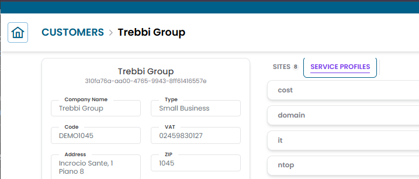
Fig.3 — Hierarchy tabs on a Customer — Sites and Service Profiles
Filtering the hierarchy
Next to the hierarchy tabs, a filter icon lets you narrow down the rows displayed in the right panel.
Two filter modes are available:
| Filter | Description |
|---|---|
| Filter by name or code | Type a string to show only rows whose name or code contains the entered text |
| Severity | Select one or more status values (green, red, yellow, purple, gray) to show only rows matching that status |
The filter applies to the currently visible level. Clear the filter to restore the full list.
When viewing a Customer hierarchy, an additional Disabled sites toggle is available next to the filter icon. Disabled sites are hidden by default — enable the toggle to include them in the hierarchy.
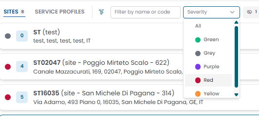
Fig.4 — Hierarchy filter — name/code search and severity selector
Entity rows
Each row in the hierarchy shows:
- A status indicator (colored dot)
- The entity name and identifier
- Optional child counters
- Action icons on the right side
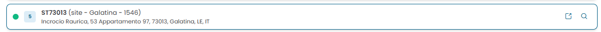
Fig.5 — Entity row with status indicator and contextual action icons
Row actions
Each row exposes contextual action icons depending on the entity type.
View metric data
Click the chart icon to open the metric data modal.
The modal displays the historical time series for the selected metric, with:
- Start date and End date pickers to set the time range
- UPDATE button to refresh the chart with the selected range
- RESET button to restore the default range
- Zoom range shortcuts: 1h, 3h, 6h, 12h, 24h
- A breadcrumb at the top showing the full path of the metric in the hierarchy
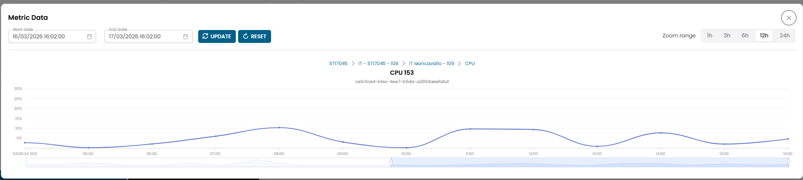
Fig.6 — Metric data modal — time series chart with date range controls
Info
Use the date range selector to focus the analysis on a specific period. Each metric is displayed as a separate chart if the modal is opened from a multi-selection (see Multi-Metrics Data).
Manage downtimes
Click the clock icon to open the Active Downtimes modal.
From the modal you can:
- View scheduled downtime periods
- Add a new downtime
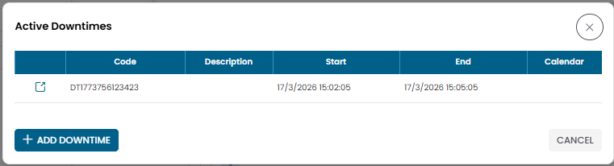
Fig.7 — Active Downtimes modal
Warning
Downtimes suppress monitoring alerts. Apply them only during planned maintenance windows.
Open dispatchers
Click the paper plane icon to access the dispatchers associated with the entity.
Dispatchers define automated actions triggered by monitoring events.
Open entity structure
Click the external link icon to open the full structure page for the selected entity.
From there you can switch between the Tree Hierarchy View and the Connections View.
Open entity details
Click the magnifier icon to open the entity's CRUD dialog.
From the dialog you can view, edit, duplicate, or delete the record.
Services
Some branches expose Services rather than metrics. A service represents a higher-level aggregation of monitoring data (for example cost.analytics.forecast.monthly).
Opening a service row displays time-based data in the same format as the metric data modal.
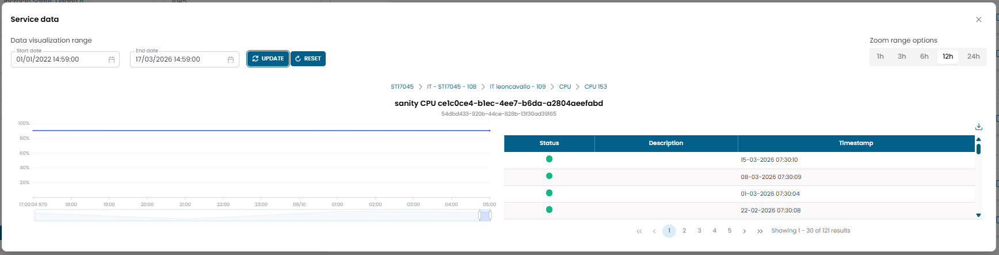
Fig.8 — Service data modal — example: forecast cost monthly
Multi-selection and bulk actions
Groups, Objects, Metric Types, and Metrics each display a checkbox on the left of their rows. Checking a checkbox selects that entity and activates a bulk action toolbar at the top of the hierarchy panel.
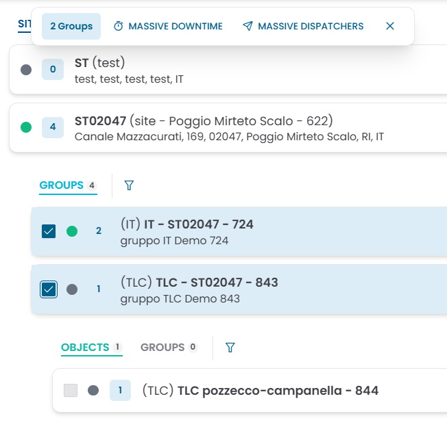
Fig.9 — Two groups selected — bulk action toolbar shows Massive Downtime and Massive Dispatchers
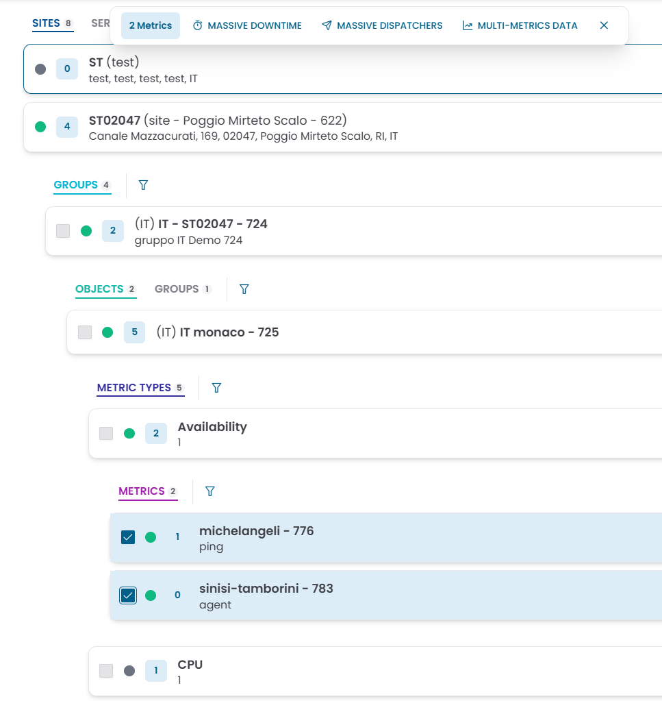
Fig.10 — Two metrics selected — bulk action toolbar adds Multi-Metrics Data
Selection rules
Selection is type-constrained: you can only select entities of the same type within a single operation.
- The first checkbox you tick determines the entity type for that selection (for example: Metric).
- Checkboxes at all other hierarchy levels are automatically disabled until the selection is cleared.
- To start a new selection of a different type, clear the current selection first using the ✕ button in the toolbar.
Bulk actions
The toolbar that appears when entities are selected exposes the following actions:
| Action | Available for | Description |
|---|---|---|
| Massive Downtime | Groups, Objects, Metric Types, Metrics | Apply a downtime to all selected entities at once |
| Massive Dispatchers | Groups, Objects, Metric Types, Metrics | Apply a dispatcher rule to all selected entities at once |
| Multi-Metrics Data | Metrics only | Open a single chart view showing the time series of all selected metrics overlaid |
Multi-Metrics Data
When two or more Metrics are selected, the Multi-Metrics Data action opens a combined chart view.
Each selected metric is displayed as a separate chart, stacked vertically, sharing the same time axis and zoom controls.
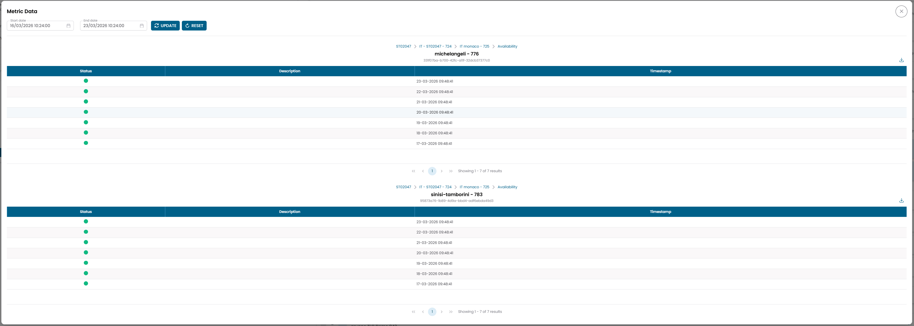
Fig.11 — Multi-Metrics Data — two CPU metrics displayed on a shared time axis
Use the Start date and End date fields at the top to set the time range, then click UPDATE to refresh all charts. The Zoom range shortcuts (1h, 3h, 6h, 12h, 24h) adjust the visible window across all charts simultaneously.
Downtime and Dispatcher dialogs
Add new downtime
Clicking the downtime action (on a single row or via Massive Downtime) opens the Add new downtime dialog.
Fig.12 — Add new downtime dialog
| Field | Description |
|---|---|
| Code | Auto-generated identifier (editable) |
| Description | Optional description |
| Start | Start date and time of the downtime window |
| End | End date and time of the downtime window |
| Calendar | Alternative to fixed dates — use a calendar schedule to define the downtime window |
| Country | Optional geographic filter |
| State/Province | Optional geographic filter |
| Status | Active or Disabled |
Warning
You must provide either Start + End dates or a Calendar. The dialog will not save without at least one of these.
Add new dispatcher
Clicking the dispatcher action opens the Add new dispatcher dialog.
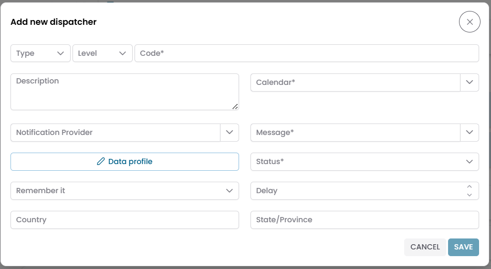
Fig.13 — Add new dispatcher dialog
| Field | Description |
|---|---|
| Type | Dispatcher type |
| Level | Severity level that triggers the dispatcher |
| Code | Unique identifier |
| Description | Optional description |
| Calendar | Calendar that controls when the dispatcher is active |
| Notification Provider | Delivery channel for the notification |
| Message | Message template to use |
| Data profile | Additional data profile configuration |
| Status | Active or Disabled |
| Remember it | Repeat behavior setting |
| Delay | Delay before the dispatcher fires |
| Country / State Province | Optional geographic filters |
Tree Hierarchy View vs Connections View
| Tree Hierarchy View | Connections View | |
|---|---|---|
| Purpose | Navigate the structural hierarchy of an entity | Explore relationships between entities |
| Layout | Expandable levels, top-down | Two-panel, tab-based |
| Typical use | Understand where an object belongs and reach its metrics | Link or unlink related records |
Use the Tree Hierarchy View to drill from a customer or site down to individual metrics. Use the Connections View to manage associations between entities.